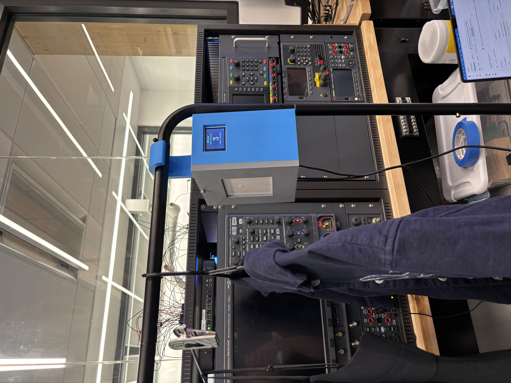
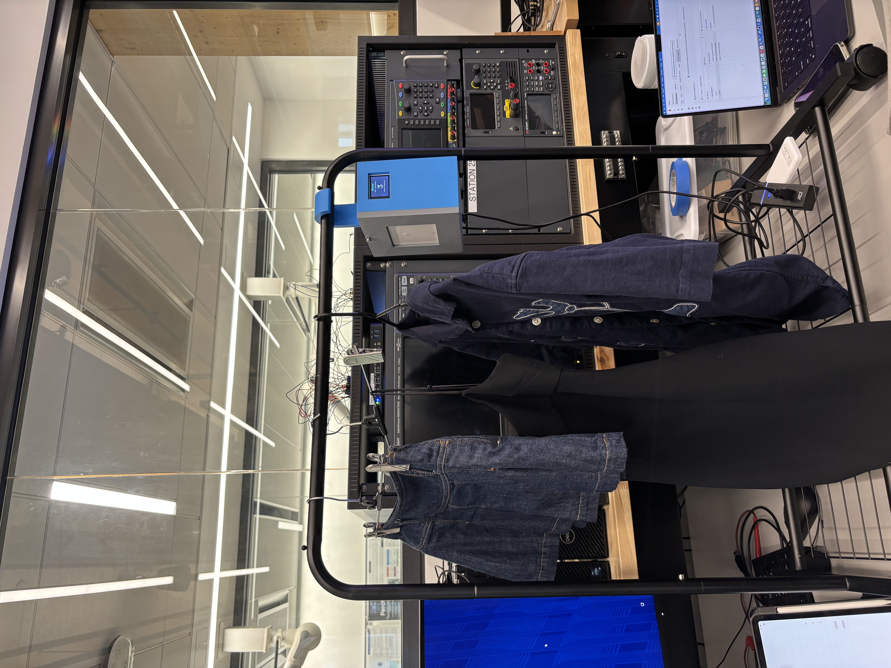
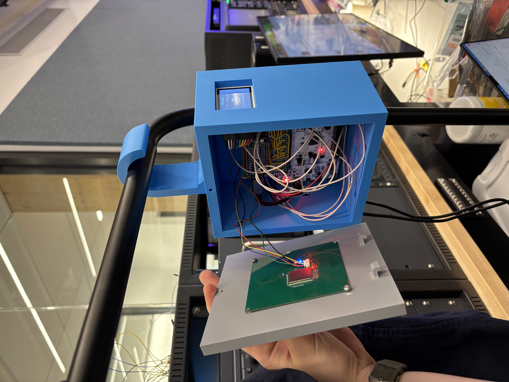

A closet-inventory system that reads laundry-tagged garments over UHF RFID, tracks them on a bare-metal STM32, and mirrors the live wardrobe to the cloud and an iOS app.

The Whear unit — 3D-printed enclosure with the reader, antenna, and electronics designed to hang on a closet rod.
Laundry-tagged garments carry passive 96-bit EPC RFID tags. A YRM100 UHF reader over a 6 dBi patch antenna inventories them and streams frames to a bare-metal STM32F411RE, which maintains a presence table with a 2-second time-to-live, surfaces live state on an ST7735 LCD and a 12-LED NeoPixel status ring, and frames the current set over UART to an ESP32 Feather. The ESP32 reconciles that set against Google Firestore, which a SwiftUI iOS app mirrors as a live closet dashboard.
Whear shipped as a working closet-inventory system that met every hardware and software requirement. On the cloud side, switching from a GET-every-cycle Firestore reconciler to a primed-cache diff made a 300 ms uplink cadence feasible and delivered sub-3-second end-to-end latency. UHF tags on hanging garments were reliably detected past 1.5 m through fabric, and the whole system was packaged on a soldered perfboard inside a symmetric 3D-printed enclosure that hangs balanced on a closet rod — no breadboards, no flying jumpers.


Industrial Impinj R2000 RFID driver written entirely from the datasheet
>1.5 m read range through fabric; sub-3 s cloud-to-app latency
Product-grade perfboard build inside a balanced printed enclosure
Course: ESE 3500, University of Pennsylvania
Team: Jefferson Ding, Dimitris Deliakidis, Carly Googel
My role: Firmware / hardware integration